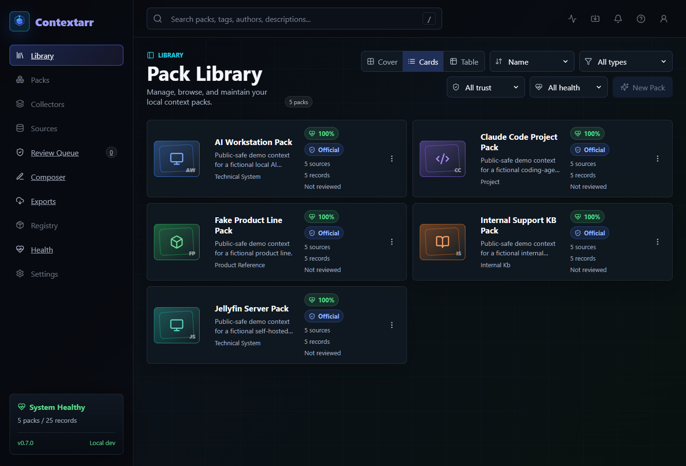

Open source / self-hosted / Phase 12 terminology planning
Stop re-explaining your systems to AI.
Contextarr turns local files, records, source maps, validation rules, and export profiles into validated Context Packs for AI assistants and agents.
Real dashboard proof

Pack anatomy
A Context Pack is a structured, versioned, source-backed bundle of reusable context.
id: ai-workstation-pack
version: 0.7.0
records: 5
sources: 5
exports:
- chatgpt / markdown / redacted
- claude / markdown / redacted
- codex / markdown / redacted
review:
trusted: official
status: human-reviewed